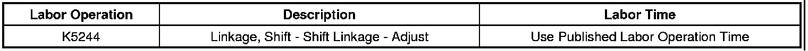
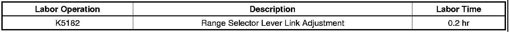

A/T - Key Stuck in Ignition/Shifter Binding/Battery Dead
TECHNICALBulletin No.: 07-07-30-032D
Date: March 07, 2011
Subject: Shifter Binds, Ignition Key Sticks,"Shift to Park" Message Displayed On Driver Information Center (DIC), Dead Battery (Adjust Shift Linkage)
Models:
2006-2011 Cadillac CTS Sedan
2007-2009 Cadillac SRX, STS-V
2007-2011 Cadillac STS
2009-2011 Cadillac CTS-V
2010-2011 Cadillac CTS Sport Wagon
Equipped with Automatic Transmission
Supercede:
This bulletin is being revised to add model years. Please discard Corporate Bulletin Number 07-07-30-032C (Section 07 - Transmission/Transaxle).
Condition
Some customers may comment on one or more of the following conditions:
- The shifter binds when putting the vehicle into gear or park.
- The ignition key sticks or is hard to remove from the ignition lock cylinder.
- The "Shift to Park" message is constantly displayed on the Driver Information Center (DIC) when the shifter is in the "Park" position.
- A dead battery that follows after parking the vehicle for an extended period of time (less than 24 hours). This vehicle may have been left in accessory mode with the "Shift to Park" message displayed.
- The shifter binds when moving the lever from Drive to Manual mode.
Cause
This condition may be caused by the shift linkage adjustment, a slow Brake Transmission Shift Interlock (BTSI) mechanism or a Park Confirmation micro-switch that is not closed.
Correction
Adjust the automatic shift linkage following the steps below.
1. Verify the customer's concern.
2. Position the shift lever into the PARK position.
3. Check for any stored diagnostic trouble codes (DTCs). If any codes are set, diagnose the DTCs first using SI.
4. Raise and suitably support the vehicle. Refer to Lifting and Jacking the Vehicle in SI.
5. Adjust the automatic shift control linkage. Refer to Shift Control Linkage Adjustment in SI.
6. Lower the vehicle.
Tip
If the "Shift to Park" message is displayed, try wiggling or "bumping" the shifter while in the PARK position. If the message goes out, then repeat the adjustment. This is typically an indicator that the shift linkage is biased rearward. If the initial condition was Drive to Tap Mode binding, then the shifter linkage was initially biased forward.
7. Determine if the condition has been corrected. If the condition still exists, the automatic transmission shift control may need to be replaced. Refer to Automatic Transmission Control Replacement in SI.
Warranty Information (2006-2009 Model Year Vehicles)
For vehicles repaired under warranty, use:

Warranty Information (2010-2011 Model Year Vehicles)

For vehicles repaired under warranty, use the table.

Disclaimer